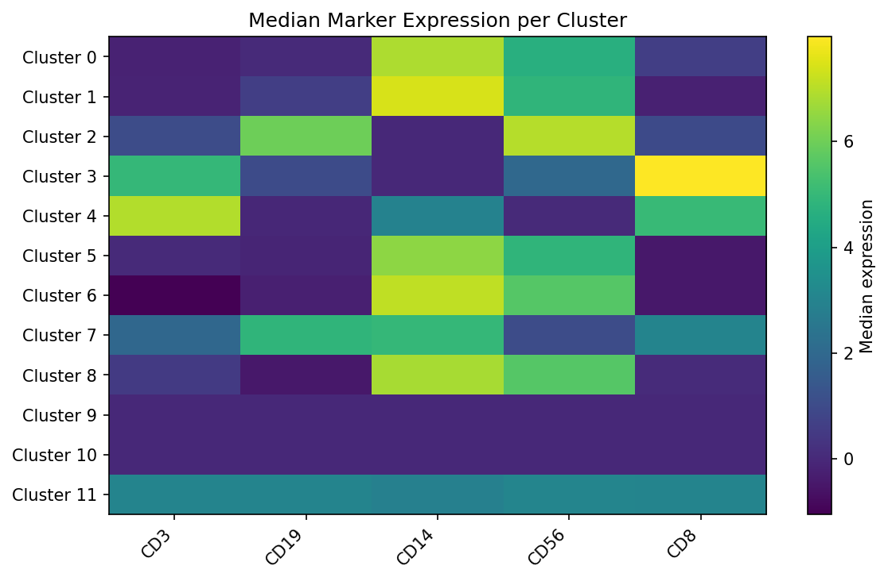

densitree#
A reference Python implementation of the SPADE algorithm for high-dimensional cytometry and single-cell data.
SPADE (Spanning-tree Progression Analysis of Density-normalized Events) extracts cellular hierarchies from high-dimensional single-cell data by combining density-dependent downsampling, agglomerative clustering, and minimum spanning tree construction.
Why densitree?#
scikit-learn compatible —
fit()/fit_predict()API, works with numpy arrays and pandas DataFramesExtensible pipeline — swap any step (density estimation, clustering, etc.) via the
BaseStepinterfaceDual visualization — static matplotlib and interactive plotly backends
Reproducible — deterministic results with
random_stateparameterWell-tested — comprehensive unit and integration test suite
Pure Python — no R or MATLAB dependency
Quick Example#
import numpy as np
from densitree import SPADE
X = np.random.default_rng(0).normal(size=(1000, 10))
spade = SPADE(n_clusters=20, downsample_target=0.1, random_state=42)
spade.fit(X)
# Cluster labels for all 1000 cells
print(spade.labels_)
# Per-cluster statistics
print(spade.result_.cluster_stats_)
# Visualize the SPADE tree
spade.result_.plot_tree(color_by=0, backend="matplotlib")
Example outputs#
Tree colored by marker expression#
Nodes are sized by cell count. Color shows median CD3 expression — high (yellow) in T cell clusters, low (purple) elsewhere.

Condition comparison#
Red nodes are enriched in the disease condition, blue in healthy. Cluster 5 (dark red) contains a rare population expanded in disease.

Cluster heatmap#
Median marker expression per cluster reveals distinct cell populations.

Interactive visualization#
densitree also supports interactive plotly trees — hover for cluster details, zoom and pan.
Installation#
pip install densitree
Or from source:
git clone https://github.com/fuzue/densitree.git
cd densitree
pip install -e ".[dev]"